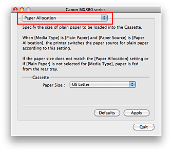

-
Select Paper Allocation from the pop-up menu on the Canon IJ Printer Utility
 -
Select the paper size
From Paper Size, select the plain paper size to be fed from the cassette.
 Important
Important
-
The Paper Size box displays only the paper sizes that this product can use.
-
-
Complete the setup
Click Apply, and when the confirmation message appears, click OK.
The paper size to be printed from the cassette will be changed from hereafter.